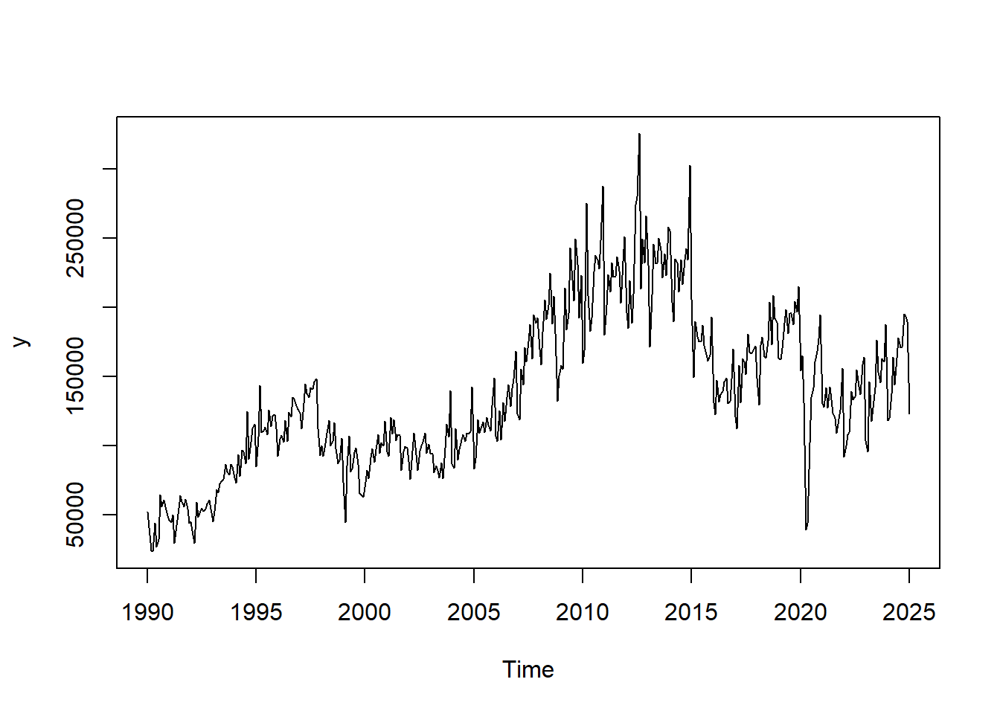
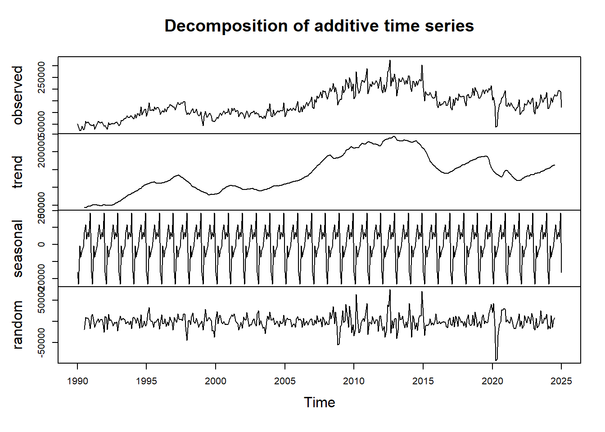
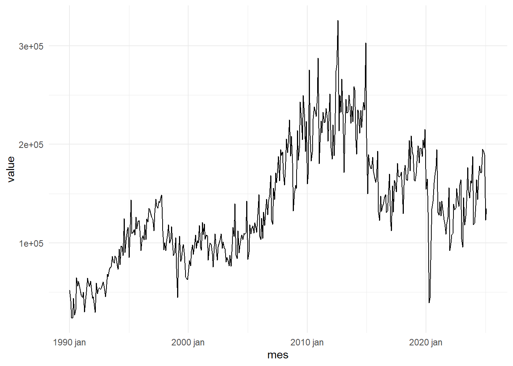
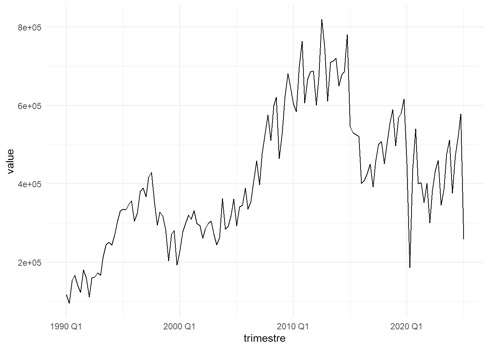
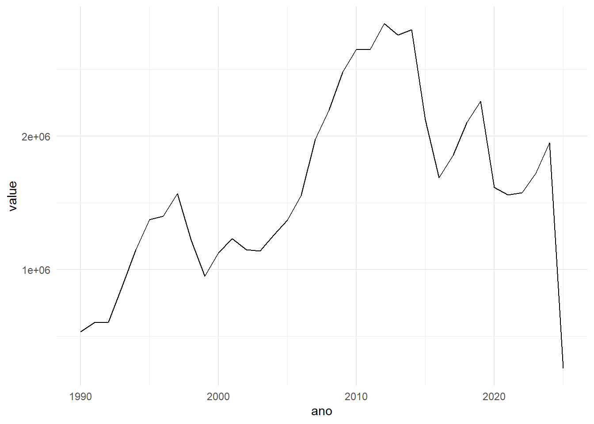
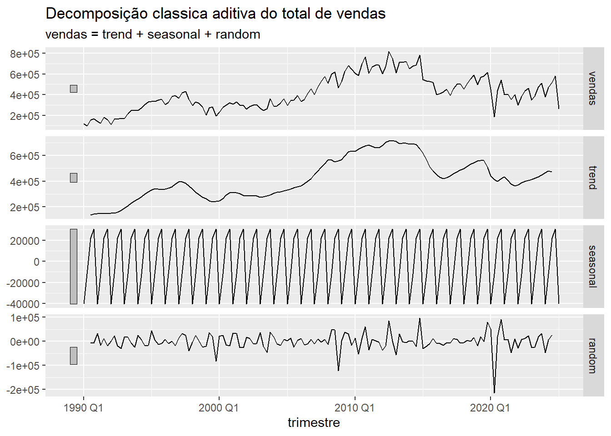
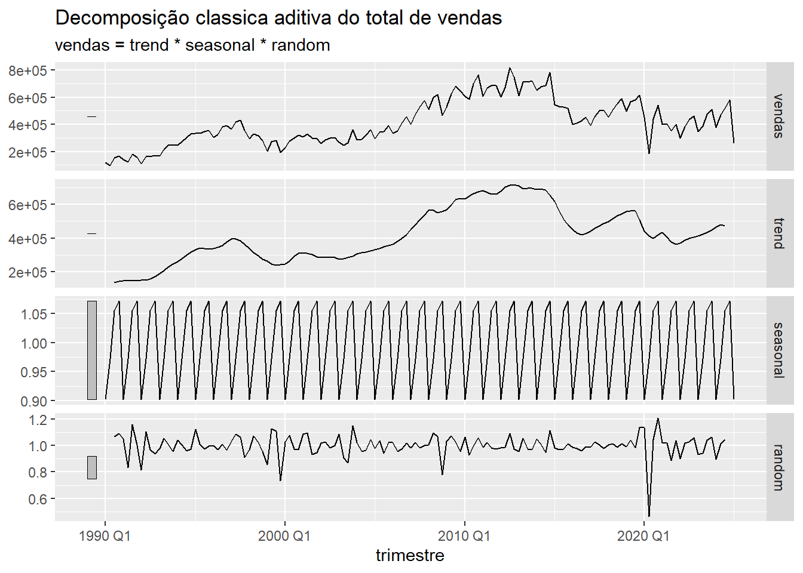
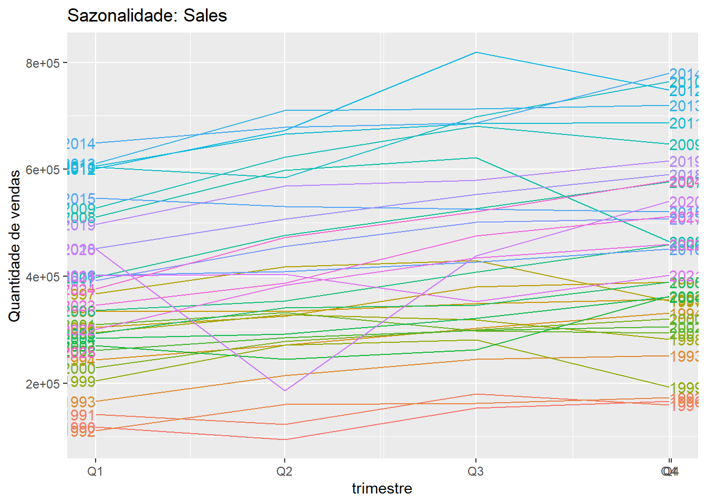
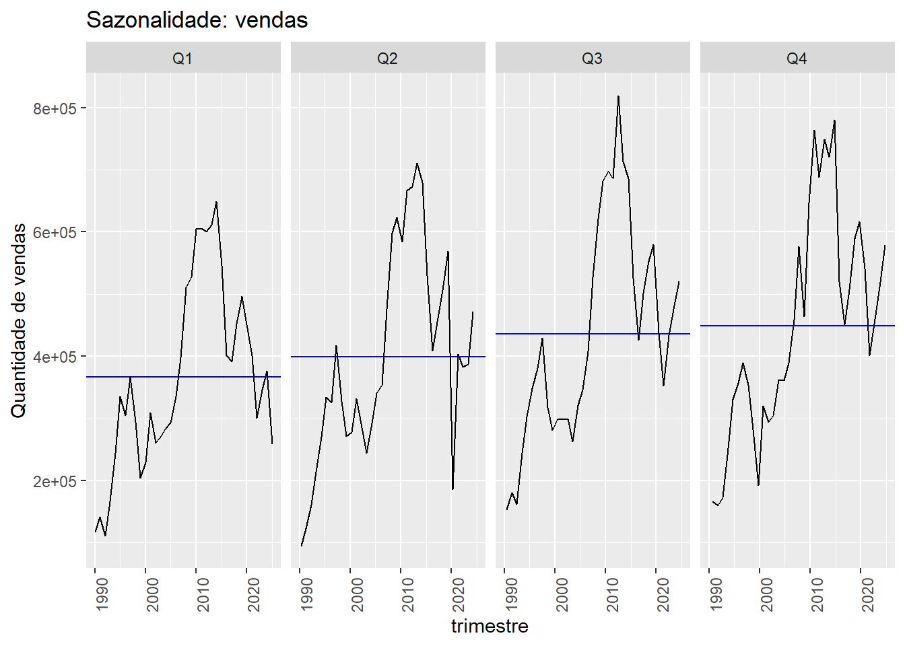

## Bibliotecas de séries temporais
library(TSA)
library(forecast)
library(fpp3)
library(tsibble)
library(tsibbledata)Primeiros passos para visualização de séries
Visualização de dados temporais
### Carregando banco de dados em formato csv
df_auto <- readr::read_csv("C:\\Users\\pedro\\Documents\\github\\econometria\\Aulas\\Etapa2\\Visualizacao_series_temporais\\vendas_automoveis.csv")
head(df_auto)# A tibble: 6 × 2
Data vendas
<chr> <dbl>
1 01/1990 52233
2 02/1990 41228
3 03/1990 24353
4 04/1990 23705
5 05/1990 44062
6 06/1990 27130Formato TS
## Transformando a variavel Sales no formato TS
y = ts( df_auto$vendas, start = 1990,end = 2025, frequency = 12 )
plot.ts( y )
plot(decompose(y))
Usando o formato tstible
Em alguns casos é necessário transformar o formato das datas para que possamos usar o formato tstible.
df_auto$Data_formatada <- as.Date(paste0("01/", df_auto$Data), format = "%d/%m/%Y")
head(df_auto)# A tibble: 6 × 3
Data vendas Data_formatada
<chr> <dbl> <date>
1 01/1990 52233 1990-01-01
2 02/1990 41228 1990-02-01
3 03/1990 24353 1990-03-01
4 04/1990 23705 1990-04-01
5 05/1990 44062 1990-05-01
6 06/1990 27130 1990-06-01 Série mensal
### transformando para o formato tstible
serie_mensal <- df_auto %>%
mutate(mes = yearmonth(Data_formatada)) %>%
as_tsibble(index = mes) %>%
select( mes, vendas )
serie_mensal# A tsibble: 422 x 2 [1M]
mes vendas
<mth> <dbl>
1 1990 jan 52233
2 1990 fev 41228
3 1990 mar 24353
4 1990 abr 23705
5 1990 mai 44062
6 1990 jun 27130
7 1990 jul 32537
8 1990 ago 64831
9 1990 set 56181
10 1990 out 60823
# ℹ 412 more rows### Plot das series
serie_mensal %>%
pivot_longer(-mes) %>%
ggplot(aes(x = mes, y = value)) +
geom_line() +
theme_minimal()
Série trimestral
## serie trimestral
serie_trimestral <- df_auto %>%
mutate(trimestre = yearquarter(Data_formatada)) %>%
group_by(trimestre) %>%
summarise(vendas = sum(vendas), .groups = "drop") %>%
as_tsibble(index = trimestre)
### Plot das series
serie_trimestral %>%
pivot_longer(-trimestre) %>%
ggplot(aes(x = trimestre, y = value)) +
geom_line() +
theme_minimal()
Série Anual
### transformando para anual
serie_anual <- df_auto %>%
mutate(ano = year(Data_formatada)) %>%
group_by(ano) %>%
summarise(vendas = sum(vendas), .groups = "drop") %>%
as_tsibble(index = ano)
serie_anual# A tsibble: 36 x 2 [1Y]
ano vendas
<dbl> <dbl>
1 1990 532839
2 1991 604400
3 1992 606590
4 1993 876165
5 1994 1148367
6 1995 1374964
7 1996 1400029
8 1997 1567848
9 1998 1222749
10 1999 949032
# ℹ 26 more rows### Plot das series
serie_anual %>%
pivot_longer(-ano) %>%
ggplot(aes(x = ano, y = value)) +
geom_line() +
theme_minimal()
Extraindo os componentes de uma serie temporal
Decomposição aditiva
serie_trimestral %>%
model(
classical_decomposition(vendas, type = "additive")
) %>%
components() %>%
autoplot() +
labs(title = "Decomposição classica aditiva do total de vendas")Warning: Removed 2 rows containing missing values or values outside the scale range
(`geom_line()`).
Decomposição multiplicativa
serie_trimestral %>%
model(
classical_decomposition(vendas, type = "multiplicative")
) %>%
components() %>%
autoplot() +
labs(title = "Decomposição classica aditiva do total de vendas")Warning: Removed 2 rows containing missing values or values outside the scale range
(`geom_line()`).
Identificando se existe sazonalidade na série
### Estudando a sazonalidade
serie_trimestral %>%
gg_season(vendas, labels = "both") +
labs(y = "Quantidade de vendas",
title = "Sazonalidade: Sales")
### subgraficos
serie_trimestral %>%
gg_subseries(vendas) +
labs(
y = "Quantidade de vendas",
title = "Sazonalidade: vendas"
)